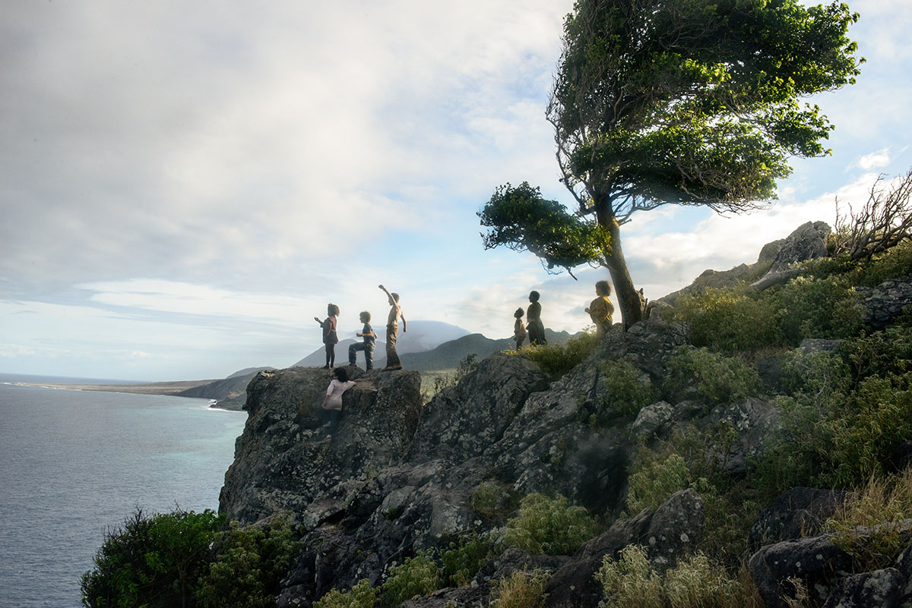
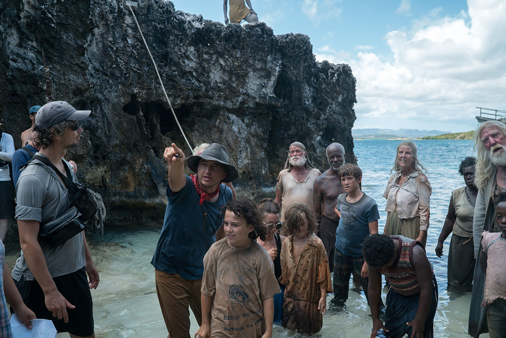
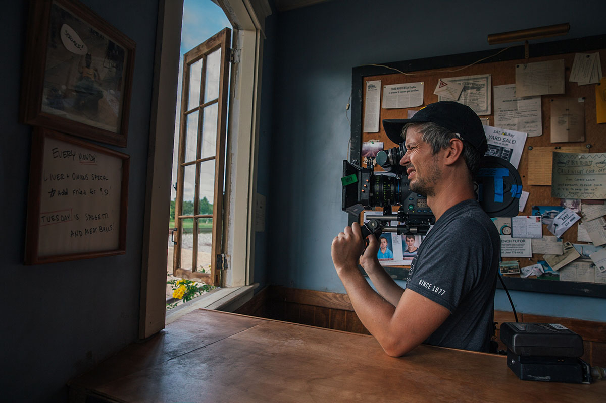
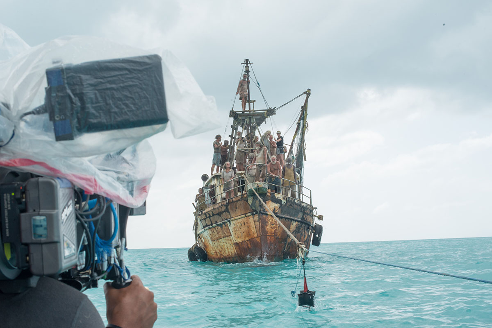

Kodak S16mm film casts a powerful spell of magical realism over Benh Zeitlin's Wendy
Devin France in the film WENDY. Photo by Eric Zachanowich. © 2019 Twentieth Century Fox Film Corporation. All Rights Reserved.

Using Kodak 16mm filmstocks, cinematographer Sturla Brandth Grøvlen created suitably dreary and then sublimely dreamlike visuals for Wendy, director Benh Zeitlin's reimagining of J. M. Barrie’s classic children’s tale of ‘Peter Pan.’
Described by critics as a ‘picture-perfect’ depiction of the delicate enchantment of childhood, the movie echoes the magically realistic aesthetics of Zeitlin's multi-award-winning feature Beasts of the Southern Wild (2014), which was also shot on 16mm film.
“Behn only shoots on 16mm film and had strong ideas about the look for Wendy,” says Grøvlen. “He wanted to be in with the kids, to view things from their eye-level, in a naturalistic, close-up documentary style. From a physical perspective his choice of Super 16mm was great in supporting an intuitive, observational camera moving with the action. And visually, the palette of film and randomness of grain were perfect for delivering a colorful and intimate experience.”
Devin France on the set of WENDY, with cinematographer Sturla Brandth Grøvlen operating the 16mm camera. Photo by Eric Zachanowich. © 2019 Twentieth Century Fox Film Corporation. All Rights Reserved.
The $5M film follows Wendy, a young girl who is kidnapped and taken away from her Louisiana home to an exotic island – Barrie’s famous Neverland – where mysterious events have disrupted the cycles of age and time. Accompanied by Peter, a reckless and adventurous young boy, Wendy fights to save her family, her freedom, and the joyous spirit of youth from the deadly peril of growing up.
Principal photography on Wendy took place over 75 shooting days, between February and June 2017. For the first three months filming took place around the coast and interior of the small tropical Caribbean island of Montserrat. This included the barren ‘Exclusion Zone,’ where volcanic activity in 1995 destroyed the Georgian era capital city of Plymouth, and where the volcanoes still rumble today.
“It’s an atmospheric desert of ash and dust, where some rooftops are still visible,” says Grøvlen, “and is the sort of place where you park cars pointing towards the exit.”
(From L-R): Yashua Mack, Devin France, Gage Naquin, Gavin Naquin, Romyri Ross, Ahmad Cage and Krzysztof Meyn in the film WENDY. Photo by Jess Pinkham. © 2019 Twentieth Century Fox Film Corporation. All Rights Reserved.
The Caribbean leg of production also encompassed shoots on the nearby islands of Barbuda and Antigua, with a good degree of filming taking place during golden and blue hours. Production then moved to locations around Louisiana for four weeks, where the movie’s opening and closing sequences were shot, before a concluding ten-day stint in Mexico to shoot the movie’s various cave and water sequences.
Grøvlen framed the production in 1.85:12 aspect ratio, selecting ARRI 416 16mm cameras, fitted with ARRI Zeiss Ultra 16 primes, for the main unit cinematography. He chose an Aaton A-Minima 16mm camera, with an Angènieux zoom, to capture atmospheric B-roll of weather and landscapes.
(From L-R): Director of Photography Sturla Brandth Grovlen, Writer/Director Benh Zeitlin, Devin France, Krzysztof Meyn, Gage Naquin and Ahmad Cage on the set of WENDY. Photo by Mary Cybulski. © 2019 Twentieth Century Fox Film Corporation. All Rights Reserved.
“During pre-production, we did a bunch of camera tests with all kinds of different vintage lenses in combination with 16mm film, but Behn and I ultimately felt the texture of the Kodak 16mm film itself was what we wanted most, rather than any lens artifacts,” he says. “So my lens choice was really based around having a consistent, sharp image through the glass, and we let the celluloid do its own magical thing.”
To depict the movie’s Louisiana-based scenes, Grøvlen went with KODAK VISION3 250 Color Negative Film 7207, pulled by two stops at the lab. He switched to KODAK VISION3 50D Color Negative Film 7203 for the Neverland sequences on Montserrat, Barbuda and Antigua, and used KODAK VISION3 500T Color Negative Film 7219 for the movie’s nighttime sequences. Film processing was done at Colorlab, located in Rockville, Maryland.
“I wanted to create a distinct difference between the drab and boring world the kids inhabit in Louisiana, and the rich, exciting fantasy island of Neverland,” explains Grøvlen. “Under-developing the 250D by two stops, as part of the pull-process at the lab, meant the image lost some contrast and saturation, and gave it the dusty and cheerless feel that Behn and I wanted for those parts of the story, while still rendering pleasing skin tones on the children.
“By contrast, normally exposed 50D drinks up color and is especially rich and vivid when it comes to capturing sunsets and natural environments. Blue skies look magical and the skin tones are lovely. There’s a special enchantment in the images of the children dancing in giant shadows and the shreds of amber sunshine in the grass. The 50D also has a higher contrast to the 250D, so it was the perfect filmstock to differentiate visually between the two worlds of Louisiana and Neverland. It also helped to make the transition to the barren, volcanic parts of the island even more impactful, while heightening the sense of magical realism.
Director of Photography Sturla Brandth Grovlen on the set of WENDY. Photo by Eric Zachanowich. © 2019 Twentieth Century Fox Film Corporation. All Rights Reserved.
“I went with the 500T for the night sequences and exposed normally, as it was fast enough to capture the atmosphere and details of the many scenes that were lit predominantly by just by fire.”
While Grøvlen believes S16mm film suited the visual storytelling, the diminutive nature of the camera package and its analog mechanics suited the practical logistics of making the film in difficult terrain.
“We shot pretty much everything handheld. This meant I either had the camera on my hip or had to squat down to get at eye-level with the kids, which was tough. But, thankfully the 16mm camera package is light and maneuverable, so I didn’t get a bad back, and the framing became fun and exciting,” he says. “Also, my crew felt more comfortable working with a mechanical film camera in those conditions. The electronics of digital cameras would have struggled with all the sand and dust we encountered.”
Director of Photography Sturla Brandth Grovlen films a scene in WENDY. Photo by Jess Pinkham. © 2019 Twentieth Century Fox Film Corporation. All Rights Reserved.
Grøvlen concludes: “Film always amazes me. It responds so well to natural daylight, and the 16mm delivered lovely results from our beach, mountain and volcano locations.
“Also, it has a depth to the image, a sort of three-dimensionality, that you just don’t get with digital sensors. Maybe that is something to do with the texture of random grain, and maybe also the different layers of emulsion within the film itself. Either way, 16mm film once again delivered stunning results for Behn and was the right thing to create the visuals for his world.”